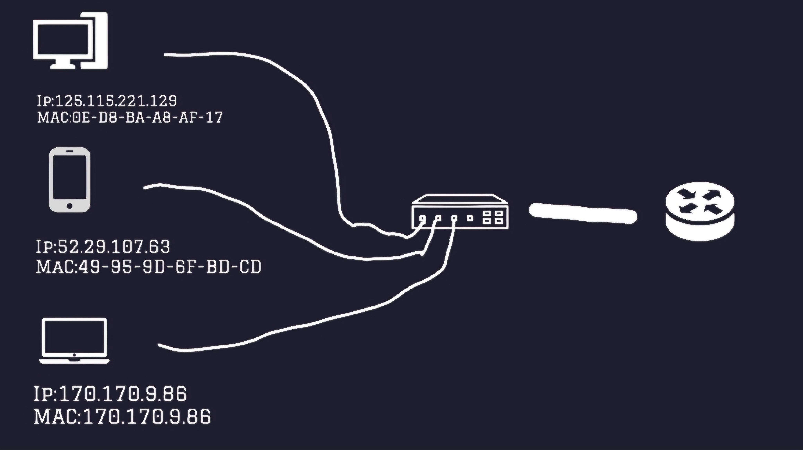
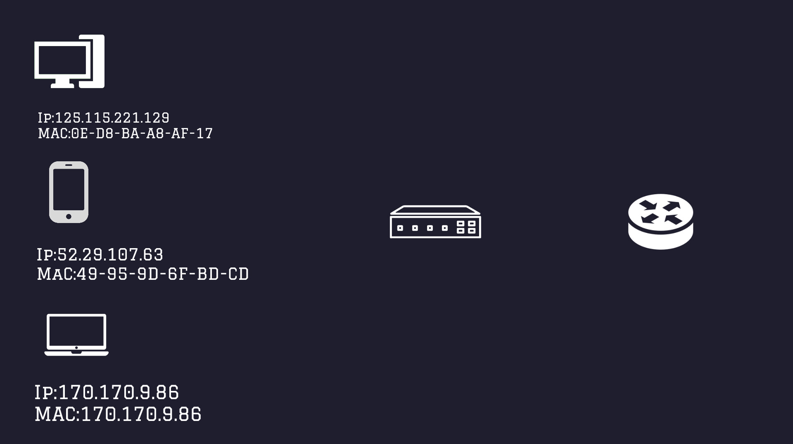
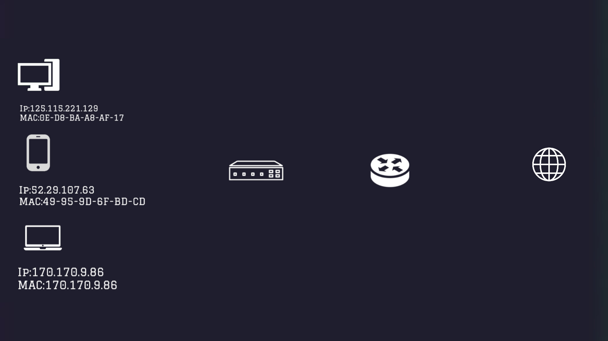
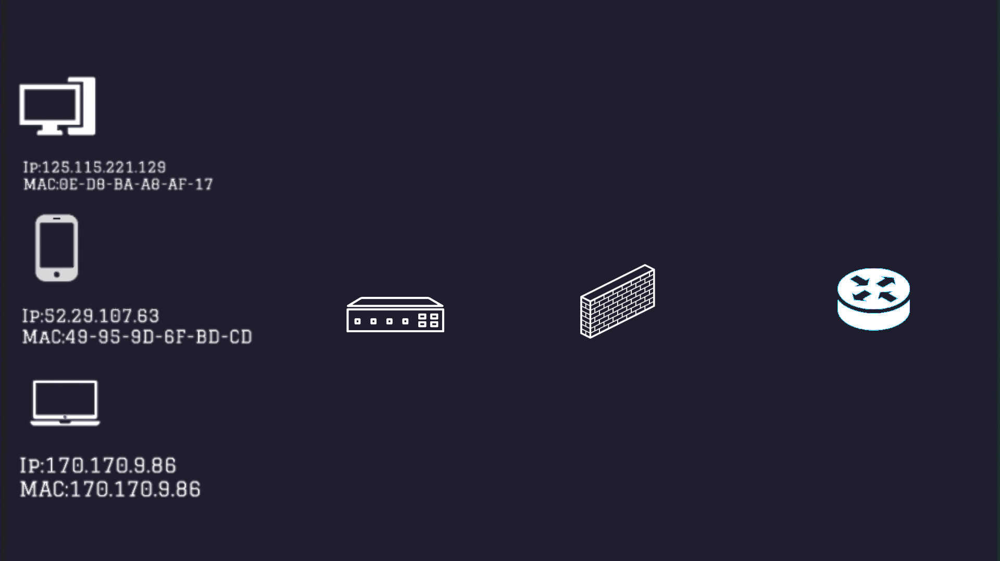
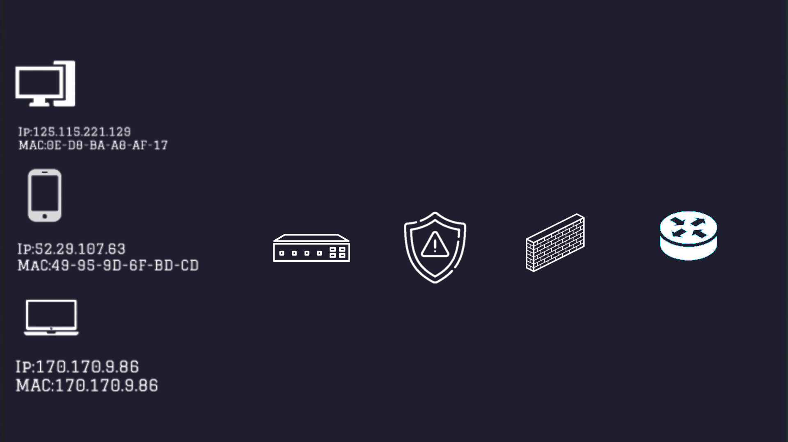

What is a Network ?
A network is a collection of computers, devices, or nodes that are connected together to share resources, data, and services.
Type Networking
-
PAN (Personal Area Network)
Range/Distance: 1 to 10 meters
-
LAN (Local Area Network)
Range/Distance: Up to 100 meters
-
MAN (Metropolitan Area Network)
Range/Distance:5 to 50 kilometers
-
WAN (Wide Area Network)
Range/Distance: Across country or the world
Network basics
There are 2 types of IP addresses: private IP and public IP.
- A private IP is only accessible within the local network. It identifies the device on the network.
- A public IP allows the device to communicate with external networks outside the local network.
A frame is like a container that carries the data so that device B can receive the message.
It includes necessary information such as source and destination addresses and the payload.
A MAC (Media Access Control) address helps determine the path data should take to reach a specific IP.
It identifies the network interface of a device and ensures communication within the local network.
How a LAN Networking Works
 Connection with internet
NAT/PAt
Network Security
Firewall
IDS - IPS
VPN